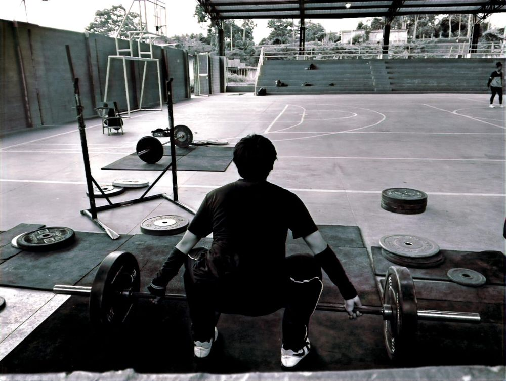
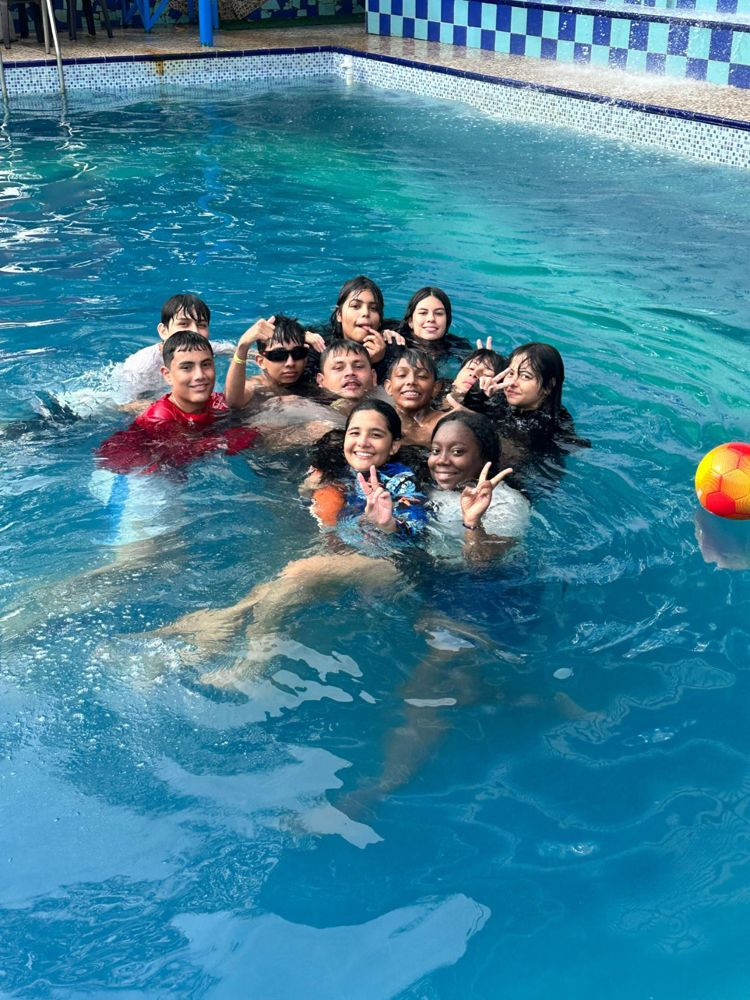
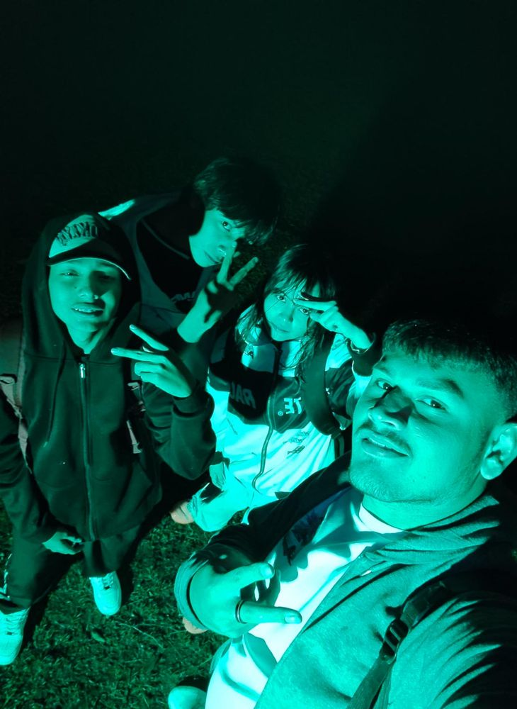
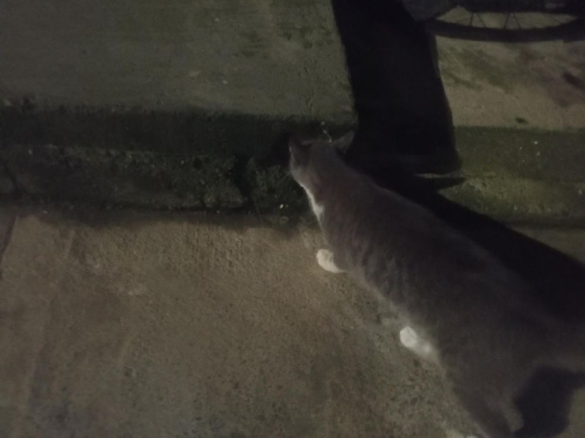

Fortalezas
Mi principal fortaleza es la perseverancia. También cuento con una conciencia propia que me permite observar mis pensamientos desde otra perspectiva, darme cuenta de errores y reflexionar de manera introspectiva. Sé evaluar si una situación realmente amerita toda mi atención o si es algo que no representa un peso grande en mi vida. Intento no sobreactuar ante lo innecesario y no preocuparme por lo que no puedo cambiar. Aunque a veces la preocupación es inevitable y normal, no permito que me agobie durante mucho tiempo. Esa capacidad de volver al centro es algo que valoro y quiero seguir trabajando.
Agradecimientos
Agradezco a mis compañeros por todos los momentos buenos, bonitos y también por los malos: las discusiones entre nosotros. Visto desde otra perspectiva, es algo valioso que después de todo eso siguiéramos juntos como grupo. Agradezco especialmente a mi mejor amiga, de quien aprendí cosas que llevaré siempre conmigo. Ella ha sido una parte importante en la historia de mi vida y me ayudó a definir aspectos esenciales sobre mí mismo.
También agradezco al deporte y a la fotografía por haber cambiado mi forma de ver el mundo, y a todas las personas que, de una u otra manera, me han acompañado en este tramo del camino, un tramo tan corton pero tan significante.


Este proyecto es un pequeño viztaso de quien soy, que ser humano soy y quien podria llegar a ser. Sera el ultimo proyecto que hare en esta Institucion, una gran etapa esta llegandop a su fin, lo cual es algo triste ciertamente, un momento que hace unos años se veia tan lejano, por fin esta sobre mi, es aterrador desde cierta perspectiva, pero no debo encapsularme en eso,solo me queda mirar hacia el futuro con optimismo y vivir el resto de mi vida.Julián Quintero · 2026